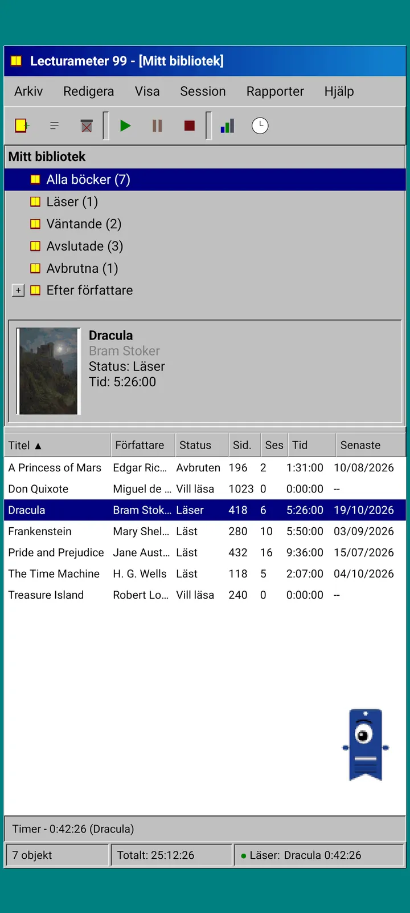
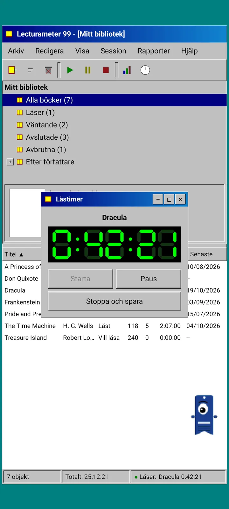
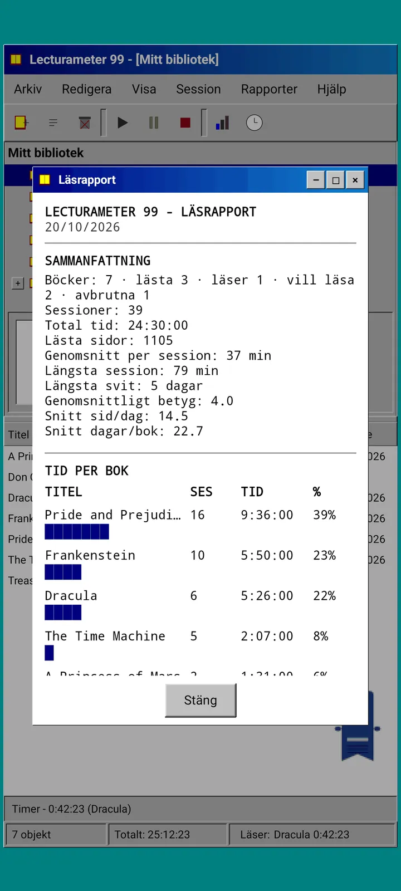
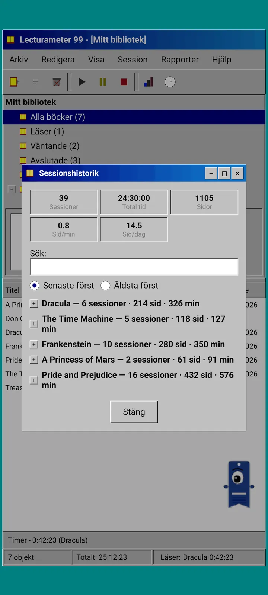
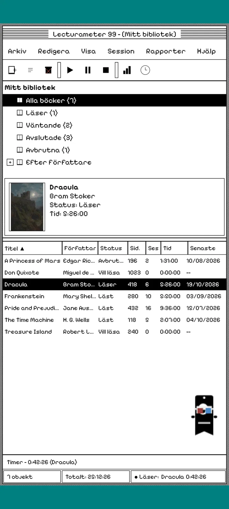
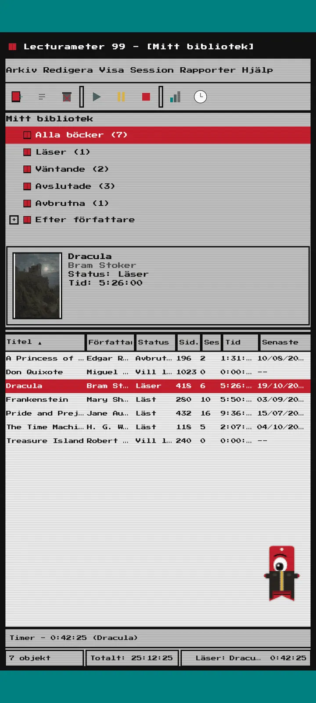
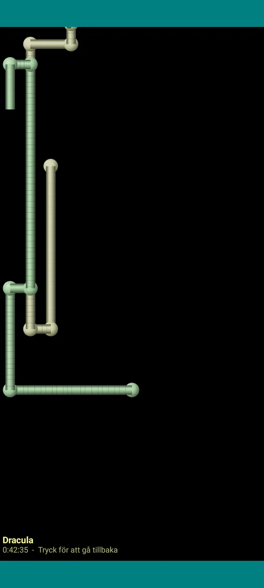

Lecturameter 1999
Lecturameter som om du hade installerat det från en CD-ROM 1999. En alternativ klient till appen, med fönster, menyer och tabeller, som öppnar dina riktiga säkerhetskopior.

Vad det är
Ett skrivbordsprogram från slutet av nittiotalet som körs på din telefon. Ett fönster över ett blågrönt skrivbord, en menyrad, ett verktygsfält, ett mappträd, en tät tabell och en statusrad.
- Biblioteksträd: alla böcker, läser, väntande, avslutade, avbrutna och per författare
- Tabell med titel, författare, status, sidor, sessioner, tid och senast läst. Tryck på en kolumnrubrik för att sortera
- Riktig boksökning, med samma katalog som Lecturameter använder
- Importerar och exporterar Lecturameters säkerhetskopia och CSV-filen från Goodreads. Din data går in och ut utan att något går förlorat

Varför det finns
Ett experiment: bygga om idén bakom Lecturameter från grunden med helt andra designförutsättningar, utan att röra den riktiga appen. Av alla omtolkningar var det 1999-versionen jag gillade mest, så jag gjorde klart den som en rolig övning och gjorde den till en komplett klient. Den är enklare än Lecturameter med flit: det är ett experiment och i princip kommer den inte att utvecklas vidare.
- Tidtagare i ett flytande fönster med grön LCD-display. Den kan flyttas, minimeras till ett aktivitetsfält och fortsätter räkna i statusraden
- När du stoppar ber dialogrutan för att spara sessionen om dina sidor och räknar ut din takt, precis som Lecturameter
- Sparade sessioner är Lecturameter-sessioner: de kommer tillbaka till den moderna appen om du exporterar en säkerhetskopia från Lecturameter 1999 och importerar den i Lecturameter.

Läsrapport
Statistiken är en utskriven rapport: sammanfattning, tid per bok med blockstaplar, hastighet i sidor per dag, en kalender över året ritad med tecken och de sju senaste dagarna.

Sessionshistorik
Sessioner grupperade per bok i ett träd med plus och minus, med fem värden högst upp: sessioner, total tid, sidor, sidor per minut och sidor per dag.

Spara session
Datum, minuter, första och sista sidan, kommentar. Sammanfattningen räknar ut sidor och takt medan du skriver. Om du når sista sidan frågar den om du har läst klart boken.

Pagi 99
Pagi reser till 1999 också: pixlig och lös på skärmen som tidens kontorsassistenter. Du kan dra den, den säger en replik när du trycker på den och den visar tips i gula bubblor.
Teman
Classic 98 är gratis och standard. Paketet lägger till sex till, var och en med egen bakgrund och egna ljud.

Välj det från menyn Visa
Visa, Tema... öppnar ett fönster med de sju temana. Ändringen når alla fönster, tidtagaren och Pagi på en gång.
- Classic 98, gratis och standard: grå fönster, marinblå namnlister och ett blågrönt skrivbord
- Temapaket: 1984, Gumdrop, Memory, Towers, Core och 8-bit
- Varje tema har sin egen skrivbordsbakgrund och egna ljud för tryckningar, fönster och tidtagaren
- Visa, Temaljud stänger av ljuden om du läser i tystnad

Classic 98
Grå fönster, marinblå namnlister och ett blågrönt skrivbord. Gratis, det är den appen öppnas med.

1984
Ett svartvitt skrivbord i ett bit, med punktmönster och fyrkantiga fönster.

Gumdrop
Genomskinlig färgad plast, rundade knappar och ränder i bakgrunden.

Memory
Menyerna från en skivkonsol från nittiotalet, i mörkblå toner.

Towers
En annan skivkonsol från nittiotalet, nattblå med ljusblå linjer.

Core
En svart och grön konsol, som en skärm som aldrig stängs av.

8-bit
Feta pixlar, få färger och kantiga bokstäver.

Testa innan du betalar
Tryck på ett låst tema så ändras hela appen till det. Om du stänger utan att köpa kommer det tidigare temat tillbaka.
Skärmsläckare
De visas bara medan tidtagaren är igång och du lämnar telefonen ifred. De väntar 1, 3 eller 5 minuter, eller aldrig. Ett tryck tar dig tillbaka och tidtagaren fortsätter räkna.

Flygande böcker
Pixelböcker som flaxar med omslagen över en svart skärm.

Bokstavsfält
Bokstäver från många alfabet som driver förbi, som ett stjärnfält.

Sidrör
Rör av sidor som ritar sig själva tills skärmen är full.

Studsande Pagi
Pagi som studsar mot skärmens kanter.

Läsklocka
Sessionstiden med stora LCD-siffror.

Dräkter för Pagi
Åtta dräkter för Pagi 99. Du väljer dem i Visa, Pagis dräkt... och kan prova dem innan du betalar.
- Kassettspelare
- Bakvänd keps
- 3D-glasögon
- Neonfärgade solglasögon
- Diskett i handen
- Skinnjacka
- Fickhusdjur
- Krona av kartong
Butik
Appen är gratis och komplett för att logga din läsning. Det du kan köpa ändrar bara hur den ser ut.
Hela appen, utan tidsgräns.
- Bibliotek, sökning, tidtagarur och sessioner
- Läsrapport och sessionshistorik
- Säkerhetskopia från Lecturameter och CSV från Goodreads, in och ut
- Temat Classic 98 och Pagi 99
- Inget konto och inga annonser
Engångsbetalningar, inga prenumerationer.
- Temapaket, €3.49: 6 teman med bakgrund och ljud, plus skärmsläckarna
- Skärmsläckare, €1.99: de 5 skärmsläckarna
- Pagis dräkter, €1.99: de 8 dräkterna
- Hela 1999, €4.49: teman, skärmsläckare och dräkter
Valfri dricks i menyn Hjälp, om du vill bjuda mig på en kaffe.
Teman och dräkter kan provas live innan du betalar. Om du stänger utan att köpa kommer det du hade tillbaka.
Vad som skiljer sig från Lecturameter
Samma som Lecturameter
- Samma data: böcker, sessioner, statusar, poäng och anteckningar. Säkerhetskopian är samma fil i båda apparna.
- Boksökning på titel eller författare.
- Riktigt tidtagarur: det fortsätter räkna i bakgrunden och även om du stänger appen.
- Inget konto, inga annonser, ingen uppkoppling förutom för att söka efter böcker.
- Samma språk som Lecturameter.
Bara i 1999-utgåvan
- Ett skrivbordsgränssnitt från 1999. Ingen Material.
- Riktiga fönster: du drar dem, minimerar dem och stänger dem med krysset.
- Läsrapport i text, med en kalender ritad med tecken.
- Snabbmeny vid långt tryck och kortkommandon om du ansluter ett tangentbord.
- Pixlig Pagi 99 med pratbubblor med tips.
- Valfria teman med egen bakgrund och egna ljud, skärmsläckare medan tidtagaren går och dräkter för Pagi.
Vad som medvetet utelämnats
- Inget Pro och ingen prenumeration. Att logga din läsning är helt gratis, butiken säljer bara utseende.
- Inga utmaningar, bingon, årlig Wrapped eller widgets.
- Ingen uppslukande session, inga omgivningsljud och ingen säkerhetskopia på Google Drive. Säkerhetskopian sparas som en fil.
Sluten test
Lecturameter 1999 är i sluten testning på Google Play. iOS kommer senare, utan datum än.
- Gå med i gruppen groups.google.com/g/lecturameter-1999
- Anmäl dig som testare på play.google.com/apps/testing/com.lecturameter.r1999
- Installera den från Google Play
I sluten testning på Google Play, iOS senare. Läs blogginlägget för att se var den kommer ifrån och vad du kan förvänta dig.